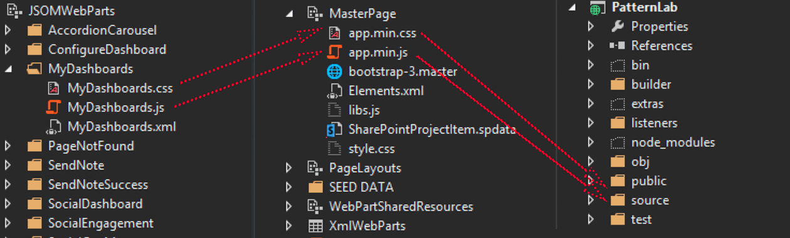

Prototype Driven Development

Yours Truly, Famous Inc.
With Prototype Driven Development the UI components can be tested in a prototype tool (like patterlab) to insure that they will work at all widths.
With PatternLab you build components in their smallest re-usable form and then add them together. For instance a "Single comment" is part of a thread of comments.
With an enhanced build system we can build the Prototype with Style Guide with our web app.
Use a modular pattern to avoid conflicts and have less global variables. link
Or just write in the jQuery plug-in format. link
SuitCSS methodology for Modularity, Cohesion, Composition and configuration, Loose coupling, Soft encapsulation.